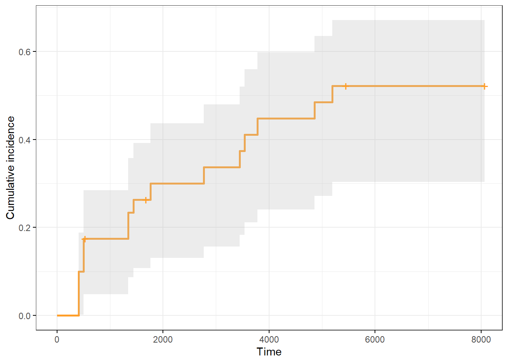
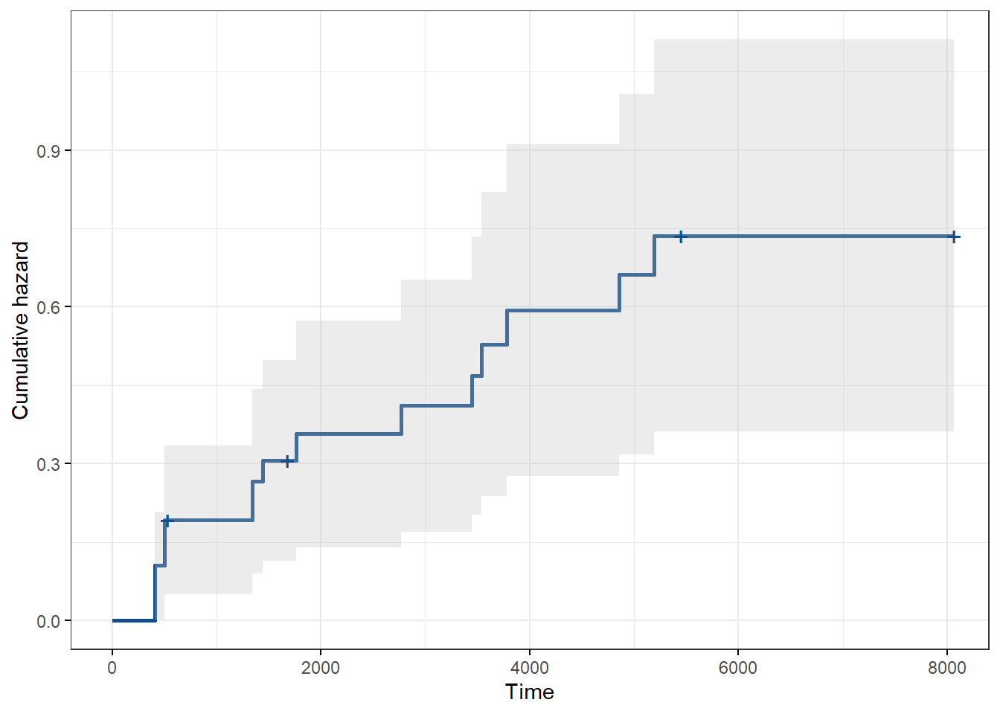
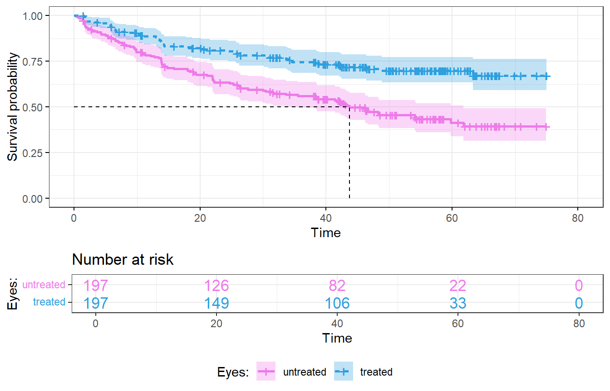
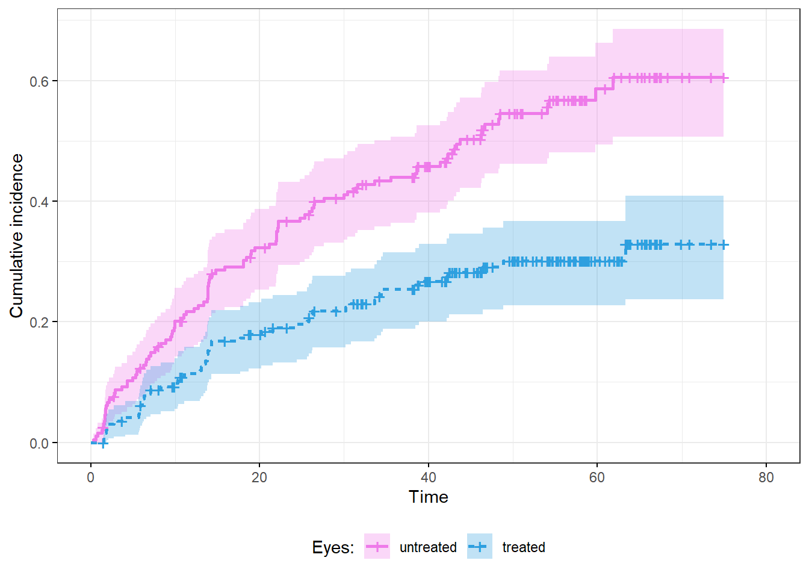

Project Description
Survival analysis is the set of statistical methods used to analyze time-to-event data, also known as failure time analysis or time-to-event analysis. The main question in survival analysis is what proportion of the population will survive to a given time if a certain event does not occur. The most important results of the analysis are survival curve and hazard curve.
Non-parametric analysis does not assume a specific form for survival or hazard functions. It uses data to estimate these functions.
A survival curve is a graphical representation of the probability that the subject of interest will not experience an event (failure or illness) within a specified period of time. The Kaplan-Meier estimate is used to model the survival function and cumulative incidence function.
Cumulative incidence (e.i. failure probability) is calculated as the number of new events (failures or cases of disease) divided by the total number of members of the population at risk during a given time.
The cumulative hazard function provides the total accumulated risk of experiencing the event of interest (failure or disease) gained by progressing to time t. The cumulative hazard can be estimated nonparametrically by the Nelson-Aalen estimators.
The main areas of application for survival analysis are the analysis of bio-medical data and the analysis of engineering reliability. This project shows simple survival analysis in engineering and medical applications.
Packages used in the program
if (!require(survival)) {install.packages('survival',
repos="http://cran.us.r-project.org"); require(survival)}
if (!require(survminer)) {install.packages('survminer',
repos="http://cran.us.r-project.org"); require(survminer)}
if (!require(gtsummary)) {install.packages('gtsummary',
repos="http://cran.us.r-project.org"); require(gtsummary)}Engineering reliability analysis
Input data
The ‘imotor’ dataset (Table 1) shows a breakdown of motor insulation as a function of temperature.
Terms:
- temp: temperature of the test,
- time: time to failure or censoring,
- status: 0=censored, 1=failed.
The main objective of the analysis is to determine what is the probability that the motor insulation will not fail by a certain time. The result of the analysis can also be presented as probability of failure (cumulative incidence) or the risk of an event occurring up to time t (the cumulative hazard).
data(reliability, package="survival")
knitr::kable(
imotor[1:7, 1:3]
)| temp | time | status |
|---|---|---|
| 150 | 8064 | 0 |
| 150 | 8064 | 0 |
| 150 | 8064 | 0 |
| 150 | 8064 | 0 |
| 150 | 8064 | 0 |
| 150 | 8064 | 0 |
| 150 | 8064 | 0 |
Survival object summary and median survival (95 % CI)
The median survival is the amount of time to which probability that the members of the group have not experienced an event is 50%.
95 % CI means 95% confidence interval.
Results of calculations are shown below and in Figures 1,2,3.
records n.max n.start events rmean se(rmean) median 0.95LCL 0.95UCL
40.000 40.000 40.000 17.000 4995.173 551.206 5196.000 3444.000 NA The median survival is 5196 The lower bound of 95% confidence interval is 3444 The upper bound of 95% confidence interval is unknownSurvival curve and number of objects at risk
The median survival can be seen in Fig.1.
ggsurvplot(fit,
conf.int = TRUE,
risk.table = TRUE,
risk.table.col = 1,
risk.table.y.text.col = TRUE,
linetype = 1,
surv.median.line = "hv",
ggtheme = theme_bw(),
palette = "#2E9FDF",
risk.table.height=.25,
legend = "none",
)Cumulative incidence curve
ggsurvplot(fit, conf.int = TRUE,
palette = "#FF9E29",
risk.table = F,
risk.table.col = 1,
ggtheme = theme_bw(),
xlab = "Time",
ylab = "Cumulative incidence",
fun = "event",
legend = "none",
) 
Cumulative hazard curve
ggsurvplot(fit, conf.int = TRUE,
ggtheme = theme_bw(),
palette = "dodgerblue4",
risk.table = F,
risk.table.col = 1,
fun = "cumhaz",
legend = "none"
)
Survival analysis of medical data
Input data
The ‘diabetic’ base shown in Table 2 is the data set of 197 patients with “high-risk” diabetic retinopathy. Each patient had one eye randomised to laser treatment and the other eye untreated and has two observations in the data set. Survival times in this data set are the actual time to vision loss in months, minus the minimum possible time to event (6.5 months). Censoring was caused by death, dropout, or end of the study.
Terms:
- id: id of a patient,
- laser: type of laser,
- age: age at diagnosis,
- eye: right, left (treated),
- trt: 0 = control eye, 1 = treated eye,
- risk: a risk score for the eye,
- time: time to lost of vision or last follow up,
- status: 0 = censored, 1 = failed.
The main aim of the analysis is to determine the effect of treatment on visual preservation. In addition, the effect of the baseline risk score is considered.
| id | laser | age | eye | trt | risk | time | status |
|---|---|---|---|---|---|---|---|
| 5 | argon | 28 | left | 0 | 9 | 46.23 | 0 |
| 5 | argon | 28 | right | 1 | 9 | 46.23 | 0 |
| 14 | xenon | 12 | left | 1 | 8 | 42.50 | 0 |
| 14 | xenon | 12 | right | 0 | 6 | 31.30 | 1 |
| 16 | xenon | 9 | left | 1 | 11 | 42.27 | 0 |
| 16 | xenon | 9 | right | 0 | 11 | 42.27 | 0 |
| 25 | xenon | 9 | left | 0 | 11 | 20.60 | 0 |
| 25 | xenon | 9 | right | 1 | 11 | 20.60 | 0 |
| 29 | xenon | 13 | left | 0 | 10 | 0.30 | 1 |
| 29 | xenon | 13 | right | 1 | 9 | 38.77 | 0 |
| 46 | xenon | 12 | left | 1 | 9 | 65.23 | 0 |
| 46 | xenon | 12 | right | 0 | 9 | 54.27 | 1 |
| 49 | xenon | 8 | left | 1 | 8 | 63.50 | 0 |
| 49 | xenon | 8 | right | 0 | 6 | 10.80 | 1 |
| 56 | xenon | 12 | left | 1 | 8 | 23.17 | 0 |
| 56 | xenon | 12 | right | 0 | 9 | 23.17 | 0 |
| 61 | xenon | 16 | left | 1 | 9 | 1.47 | 0 |
| 61 | xenon | 16 | right | 0 | 10 | 1.47 | 0 |
| 71 | argon | 21 | left | 1 | 9 | 58.07 | 0 |
| 71 | argon | 21 | right | 0 | 9 | 13.83 | 1 |
Survival object summary and median survival (95 % CI)
options(width = 90)
fit <- survfit(Surv(time, status) ~ trt, data = diabetic)
summary(fit)$table records n.max n.start events rmean se(rmean) median 0.95LCL 0.95UCL
trt=0 197 197 197 101 43.54152 2.186694 43.7 33.63 61.83
trt=1 197 197 197 54 57.82702 1.997119 NA NA NAConclusion:
The median survival for untreated eyes was equal to 43.7 95%CI=(33.63, 61.83). All treated eyes maintained vision longer than the median survival time as shown in Figures 4,5,6.
Survival curve and number at risk
ggsurvplot(fit,
conf.int = TRUE,
p.val = TRUE,
risk.table = TRUE,
risk.table.col = "strata",
risk.table.y.text.col = TRUE,
linetype = "strata",
surv.median.line = "hv",
ggtheme = theme_bw(),
palette=c("orchid2", "#2E9FDF"),
risk.table.height=.3,
legend = "bottom",
legend.title = "Eyes:",
legend.lab = c("untreated","treated")
)
Cumulative incidence curve
ggsurvplot(fit, conf.int = TRUE,
p.val = TRUE,
palette=c("orchid2", "#2E9FDF"),
risk.table = F,
risk.table.col = "strata",
linetype = "strata",
ggtheme = theme_bw(),
xlab = "Time",
ylab = "Cumulative incidence",
fun = "event",
legend = "bottom",
legend.title = "Eyes:",
legend.lab = c("untreated","treated")
) 
Cumulative hazard curve
ggsurvplot(fit, conf.int = TRUE,
p.val = TRUE,
ggtheme = theme_bw(),
palette=c("orchid2", "#2E9FDF"),
risk.table = F,
risk.table.col = "strata",
linetype = "strata",
fun = "cumhaz",
legend = "bottom",
legend.title = "Eyes:",
legend.lab = c("untreated","treated")
)Cox PH regression
The Cox proportional hazards model is used to determine the effect of categorical (trt) and continuous (risk) variables on vision survival time.
Effect of treatment
# Cox PH regression
fit = coxph(Surv(time, status)~trt, data=diabetic)
fitCall:
coxph(formula = Surv(time, status) ~ trt, data = diabetic)
coef exp(coef) se(coef) z p
trt -0.7766 0.4600 0.1688 -4.602 4.19e-06
Likelihood ratio test=22.37 on 1 df, p=2.246e-06
n= 394, number of events= 155 Conclusion:
Hazard ratio (HR = exp(coef)) – the multiplicative effect of treatment on the hazard rate, is equal 0.46, so there is approximately 55% reduction in hazard for treated versus untreated eyes.
Log-rank test
The log-rank test was used to determine whether the difference in vision survival between treated and untreated eyes was statistically significant.
survdiff(Surv(time, status)~trt, data=diabetic)Call:
survdiff(formula = Surv(time, status) ~ trt, data = diabetic)
N Observed Expected (O-E)^2/E (O-E)^2/V
trt=0 197 101 71.8 11.9 22.2
trt=1 197 54 83.2 10.3 22.2
Chisq= 22.2 on 1 degrees of freedom, p= 2e-06 Conclusion:
The chi-squared test statistic is 22.2 with 1 degree of freedom and the corresponding p < 0.05, so we reject the null hypothesis, saying that there is no difference between treated and untreated eyes. In other words, there is a statistically significant difference in vision survival between the treated and untreated patients.
Effect of treatment and risk score
fit = coxph(Surv(time, status)~trt+risk, data=diabetic)
fitCall:
coxph(formula = Surv(time, status) ~ trt + risk, data = diabetic)
coef exp(coef) se(coef) z p
trt -0.77792 0.45936 0.16881 -4.608 4.06e-06
risk 0.14600 1.15720 0.05588 2.613 0.00898
Likelihood ratio test=29.33 on 2 df, p=4.282e-07
n= 394, number of events= 155 Conclusion:
As can be seen from the results, the HR for risk score is greater than 1, so the risk score worsens the probability of survival, p for risk score is less than 0.05, so it causes a significant difference.